Unless otherwise noted on this page, the contents of this site, and the media contained, is licensed under a Creative Commons Attribution-ShareAlike 3.0 Unported License.
Works by Other Authors
- 4_Kobe_Beef_Kobe_Japan.jpg
- AbenoKintetsu.jpg
- American-Village_-01-.jpg
- Balloons.jpg
- Byodoin_Phoenix_Hall_Uji_2009.jpg
- Cherry_blossoms_at_Yoshinoyama_01.jpg
- Danjogaran_Koyasan12n3200.jpg
- Dojoji_Gobo_Wakayama15s3200.jpg
- Dotombori_Osaka_2005-07-27.JPG
- Dotonbori-7.jpg
- Engetsu_Island_Nearview.jpg
- Fish_shop_by_ellievanhoutte_in_Nishiki-ichiba_Kyoto.jpg
- FuguSaleOsaka.JPG
- Geisha-kyoto-2004-11-21.jpg
- Himeji_Castle_The_Keep_Towers.jpg
- Horyu-ji45s2s4500.jpg
- Japan_Kinki_Region_large.png
- JR-Takatsuki-pf.jpg
- JR-TennojiSta2.jpg
- JRW_series201-OsakaLoop.jpg
- JRW_shinima-tennoji.jpg
- Kakinohazusi.jpg
- Kani-Douraku_-_Head_Store.jpg
- Kasuga-taisha11bs3200.jpg
- Kibune7234.jpg
- Kinkaku3402CBcropped.jpg
- Kishiwada-Danjiri-Matsuri_Osaka_Japan.jpg
- Kita_shinchi(night).JPG
- Kitsune_udon_by_chou_i_ci_in_Kyoto.jpg
- Kiyomizu-dera_in_Kyoto.jpg
- Kobe_takahama01s3200.jpg
- Kumanonachitaisha1s2048.jpg
- Kyoto_gion02.jpg
- Modern_yaki,_rice_and_tsukemono_by_hirotomo_in_Osaka.jpg
- Nachi_waterfall_01.jpg
- Nakanoshima-b16cc.jpg
- Naniwanomiya.jpg
- Nishi-Umeda.jpg
- Nishiki_Ichiba_by_jason.jpg
- Noryo-yuka_2_at_a_Starbucks_by_MShades_in_Kyoto.jpg
- Okonomiyaki_by_Elijah_in_Osaka.jpg
- Osaka_Castle_02bs3200.jpg
- Osaka_Dotonbori.jpg
- Osakacity001.JPG
- Port_of_KOBE_-_by_Daiju_Azuma.jpg
- Shikasenbei02.jpg
- Takatsuki_Seibu01n4000.jpg
- Takatsuki_Station03n2700.jpg
- Takoyaki_by_yomi955.jpg
- Tenjinmatsuri.JPG
- Todaiji02.JPG
- Togetsukyo0270.jpg
- Totsukawa_spa_town_2011.JPG
- Tsukemono_shop_by_ellievanhoutte_in_Nishiki-ichiba_Kyoto.jpg
- Umeda-Dia-Bldg-01.jpg
- YAKUSHI_light_up.jpg
- 文化住宅PA211864.jpg
4_Kobe_Beef_Kobe_Japan.jpg
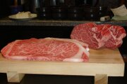
- Artist: Orlando G. Calvo
- URL: http://upload.wikimedia.org/wikipedia/commons/d/d6/4_Kobe_Beef%2C_Kobe_Japan.jpg
- Accessed: Tue Aug 16 23:04:06 2011
- License: Public Domain
AbenoKintetsu.jpg
American-Village_-01-.jpg
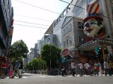
- Artist: 投稿者
- URL: http://upload.wikimedia.org/wikipedia/ja/8/85/American-Village_-01-.jpg
- Accessed: Thu Sep 15 23:44:20 2011
- License: GNU Free Documentation License, Version 1.2 or any later version
Balloons.jpg
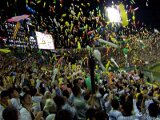
- Artist: Chris Gladis (MShades)
- URL: http://upload.wikimedia.org/wikipedia/commons/d/d1/Balloons.jpg
- Accessed: Tue Aug 16 21:56:59 2011
- License: Creative Commons Attribution 2.0 Generic
Byodoin_Phoenix_Hall_Uji_2009.jpg
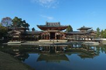
- Artist: Wiiii
- URL: http://upload.wikimedia.org/wikipedia/commons/5/59/Byodoin_Phoenix_Hall_Uji_2009.jpg
- Accessed: Tue Aug 16 23:03:24 2011
- License: GNU Free Documentation License, Version 1.2 or any later version
Cherry_blossoms_at_Yoshinoyama_01.jpg
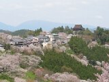
- Artist: Tawashi2006
- URL: http://upload.wikimedia.org/wikipedia/commons/7/79/Cherry_blossoms_at_Yoshinoyama_01.jpg
- Accessed: Tue Aug 16 23:02:27 2011
- License: GNU Free Documentation License, Version 1.2 or any later version
Danjogaran_Koyasan12n3200.jpg
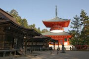
- Artist: 663highland
- URL: http://upload.wikimedia.org/wikipedia/commons/1/17/Danjogaran_Koyasan12n3200.jpg
- Accessed: Tue Aug 16 23:01:30 2011
- License: GNU Free Documentation License, Version 1.2 or any later version
Dojoji_Gobo_Wakayama15s3200.jpg
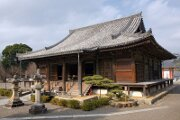
- Artist: 663highland
- URL: http://upload.wikimedia.org/wikipedia/commons/d/dd/Dojoji_Gobo_Wakayama15s3200.jpg
- Accessed: Tue Aug 16 22:58:19 2011
- License: GNU Free Documentation License, Version 1.2 or any later version
Dotombori_Osaka_2005-07-27.JPG
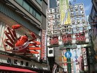
- Artist: Sakurai Midori
- URL: http://upload.wikimedia.org/wikipedia/commons/2/2b/Dotombori_Osaka_2005-07-27.JPG
- Accessed: Thu Sep 15 23:56:08 2011
- License: GNU Free Documentation License, Version 1.2 or any later version
Dotonbori-7.jpg
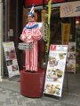
- Artist: 柏翰 / ポーハン / POHAN's photos
- URL: http://upload.wikimedia.org/wikipedia/commons/6/69/Dotonbori-7.jpg
- Accessed: Tue Aug 16 21:58:12 2011
- License: Creative Commons Attribution 2.0 Generic
Engetsu_Island_Nearview.jpg
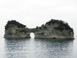
- Artist: 玄史生
- URL: http://upload.wikimedia.org/wikipedia/commons/d/d3/Engetsu_Island_Nearview.jpg
- Accessed: Tue Aug 16 22:57:46 2011
- License: Public Domain
Fish_shop_by_ellievanhoutte_in_Nishiki-ichiba_Kyoto.jpg
FuguSaleOsaka.JPG
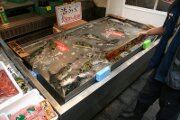
- Artist: Pangamut
- URL: http://upload.wikimedia.org/wikipedia/commons/f/f7/FuguSaleOsaka.JPG
- Accessed: Thu Sep 15 23:50:47 2011
- License: GNU Free Documentation License, Version 1.2 or any later version
Geisha-kyoto-2004-11-21.jpg
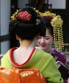
- Artist: Daniel Bachler
- URL: http://upload.wikimedia.org/wikipedia/commons/4/45/Geisha-kyoto-2004-11-21.jpg
- Accessed: Tue Aug 16 22:56:06 2011
- License: Creative Commons Attribution-Share Alike 2.5 Generic
Himeji_Castle_The_Keep_Towers.jpg
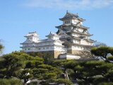
- Artist: ja:User:Reggaeman
- URL: http://upload.wikimedia.org/wikipedia/commons/3/35/Himeji_Castle_The_Keep_Towers.jpg
- Accessed: Tue Aug 16 22:55:22 2011
- License: Public Domain
Horyu-ji45s2s4500.jpg
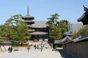
- Artist: 663highland
- URL: http://upload.wikimedia.org/wikipedia/commons/e/e4/Horyu-ji45s2s4500.jpg
- Accessed: Tue Aug 16 22:54:25 2011
- License: GNU Free Documentation License, Version 1.2 or any later version
JR-Takatsuki-pf.jpg
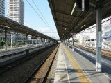
- Artist: 計記録
- URL: http://upload.wikimedia.org/wikipedia/ja/1/19/JR-Takatsuki-pf.jpg
- Accessed: Thu Sep 15 23:52:56 2011
- License: GNU Free Documentation License, Version 1.2 or any later version
Japan_Kinki_Region_large.png
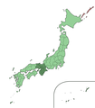
- Artist: Ningyou
- URL: http://upload.wikimedia.org/wikipedia/commons/7/7d/Japan_Kinki_Region_large.png
- Accessed: Thu Sep 29 21:35:00 2011
- License: Public Domain
JR-TennojiSta2.jpg
JRW_series201-OsakaLoop.jpg
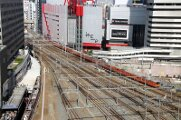
- Artist: w0746203-1
- URL: http://upload.wikimedia.org/wikipedia/commons/1/1c/JRW_series201-OsakaLoop.jpg
- Accessed: Tue Aug 16 22:52:51 2011
- License: GNU Free Documentation License, Version 1.2 or any later versio
JRW_shinima-tennoji.jpg
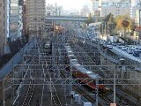
- Artist: w0746203-1
- URL: http://upload.wikimedia.org/wikipedia/commons/9/91/JRW_shinima-tennoji.jpg
- Accessed: Tue Aug 16 22:52:09 2011
- License: GNU Free Documentation License, Version 1.2 or any later version
Kakinohazusi.jpg
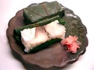
- Artist: Tomomarusan
- URL: http://upload.wikimedia.org/wikipedia/commons/3/35/Kakinohazusi.jpg
- Accessed: Tue Aug 16 22:51:19 2011
- License: GNU Free Documentation License, Version 1.2 or any later version
Kani-Douraku_-_Head_Store.jpg
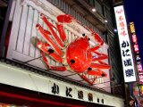
- Artist: JKT-c
- URL: http://upload.wikimedia.org/wikipedia/commons/3/36/Kani-Douraku_-_Head_Store.jpg
- Accessed: Tue Aug 16 22:50:37 2011
- License: GNU Free Documentation License, Version 1.2 or any later version
Kasuga-taisha11bs3200.jpg
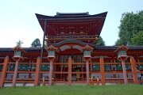
- Artist: 663highland
- URL: http://upload.wikimedia.org/wikipedia/commons/0/0d/Kasuga-taisha11bs3200.jpg
- Accessed: Tue Aug 16 22:50:09 2011
- License: GNU Free Documentation License, Version 1.2 or any later version
Kibune7234.jpg
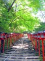
- Artist: mariemon
- URL: http://upload.wikimedia.org/wikipedia/ja/5/56/Kibune7234.jpg
- Accessed: Thu Sep 15 23:38:29 2011
- License: GNU Free Documentation License, Version 1.2 or any later version
Kinkaku3402CBcropped.jpg
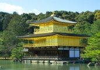
- Artist: Fg2
- URL: http://upload.wikimedia.org/wikipedia/commons/c/c9/Kinkaku3402CBcropped.jpg
- Accessed: Tue Aug 16 22:49:33 2011
- License: Public Domain
Kishiwada-Danjiri-Matsuri_Osaka_Japan.jpg
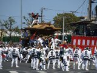
- Artist: Kounosu
- URL: http://upload.wikimedia.org/wikipedia/commons/1/10/Kishiwada-Danjiri-Matsuri_Osaka_Japan.jpg
- Accessed: Tue Aug 16 22:48:57 2011
- License: GNU Free Documentation License, Version 1.2 or any later version
Kita_shinchi(night).JPG
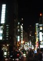
- Artist: Hiroyuki0904
- URL: http://upload.wikimedia.org/wikipedia/commons/2/2f/Kita_shinchi%28night%29.JPG
- Accessed: Thu Sep 15 23:42:25 2011
- License: Public Domain
Kitsune_udon_by_chou_i_ci_in_Kyoto.jpg
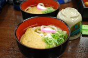
- Artist: chouici
- URL: http://upload.wikimedia.org/wikipedia/commons/0/0a/Kitsune_udon_by_chou_i_ci_in_Kyoto.jpg
- Accessed: Tue Aug 16 22:48:21 2011
- License: Creative Commons Attribution 2.0 Generic
Kiyomizu-dera_in_Kyoto.jpg
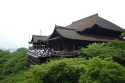
- Artist: New Japan
- URL: http://upload.wikimedia.org/wikipedia/commons/e/e4/Kiyomizu-dera_in_Kyoto.jpg
- Accessed: Tue Aug 16 22:47:32 2011
- License: GNU Free Documentation License, Version 1.2 or any later version
Kobe_takahama01s3200.jpg
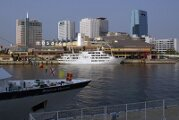
- Artist: 663highland
- URL: http://upload.wikimedia.org/wikipedia/commons/e/e2/Kobe_takahama01s3200.jpg
- Accessed: Tue Aug 16 22:46:49 2011
- License: GNU Free Documentation License, Version 1.2 or any later version / Creative Commons Attribution-Share Alike 2.5 Generic
Kumanonachitaisha1s2048.jpg
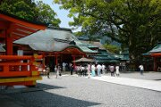
- Artist: 663highland
- URL: http://upload.wikimedia.org/wikipedia/commons/d/d0/Kumanonachitaisha1s2048.jpg
- Accessed: Tue Aug 16 22:43:39 2011
- License: GNU Free Documentation License, Version 1.2 or any later version
Kyoto_gion02.jpg
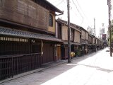
- Artist: Moja
- URL: http://upload.wikimedia.org/wikipedia/commons/6/61/Kyoto_gion02.jpg
- Accessed: Tue Aug 16 22:41:14 2011
- License: GNU Free Documentation License, Version 1.2 or any later version
Modern_yaki,_rice_and_tsukemono_by_hirotomo_in_Osaka.jpg
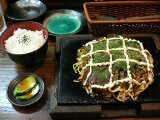
- Artist: hirotomo
- URL: http://upload.wikimedia.org/wikipedia/commons/a/a3/Modern_yaki%2C_rice_and_tsukemono_by_hirotomo_in_Osaka.jpg
- Accessed: Mon Sep 26 21:59:14 2011
- License: Creative Commons Attribution-ShareAlike 2.0 Generic
Nachi_waterfall_01.jpg
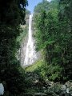
- Artist: Nachi
- URL: http://upload.wikimedia.org/wikipedia/commons/9/91/Nachi_waterfall_01.jpg
- Accessed: Tue Aug 16 22:40:32 2011
- License: Public Domain
Nakanoshima-b16cc.jpg
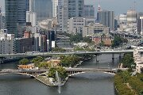
- Artist: hetgallery
- URL: http://upload.wikimedia.org/wikipedia/commons/e/ea/Nakanoshima-b16cc.jpg
- Accessed: Tue Aug 16 22:39:13 2011
- License: Creative Commons Attribution-Share Alike 3.0 Unported
Naniwanomiya.jpg
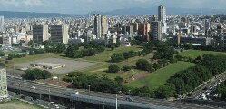
- Artist: Wikiwikiyarou
- URL: http://upload.wikimedia.org/wikipedia/commons/2/2b/Naniwanomiya.jpg
- Accessed: Tue Aug 16 22:30:08 2011
- License: Creative Commons Attribution-Share Alike 3.0 Unported
Nishi-Umeda.jpg
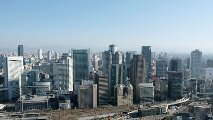
- Artist: W236
- URL: http://upload.wikimedia.org/wikipedia/ja/0/09/Nishi-Umeda.jpg
- Accessed: Thu Sep 15 23:43:10 2011
- License: GNU Free Documentation License, Version 1.2 or any later version
Nishiki_Ichiba_by_jason.jpg
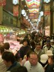
- Artist: jason.kaechler
- URL: http://upload.wikimedia.org/wikipedia/commons/5/58/Nishiki_Ichiba_by_jason.kaechler_in_Kyoto.jpg
- Accessed: Tue Aug 16 22:29:31 2011
- License: Creative Commons Attribution 2.0 Generic
Noryo-yuka_2_at_a_Starbucks_by_MShades_in_Kyoto.jpg
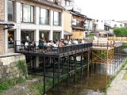
- Artist: MShades
- URL: http://upload.wikimedia.org/wikipedia/commons/9/92/Noryo-yuka_2_at_a_Starbucks_by_MShades_in_Kyoto.jpg
- Accessed: Tue Aug 16 22:28:27 2011
- License: Creative Commons Attribution 2.0 Generic
Okonomiyaki_by_Elijah_in_Osaka.jpg
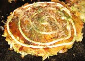
- Artist: Elijah
- URL: http://upload.wikimedia.org/wikipedia/commons/9/92/Okonomiyaki_by_Elijah_in_Osaka.jpg
- Accessed: Tue Aug 16 22:27:49 2011
- License: Creative Commons Attribution 2.0 Generic
Osaka_Castle_02bs3200.jpg
Osaka_Dotonbori.jpg
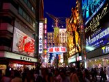
- Artist: JKT-c
- URL: http://upload.wikimedia.org/wikipedia/commons/b/b4/Osaka_Dotonbori.jpg
- Accessed: Tue Aug 16 22:26:11 2011
- License: GNU Free Documentation License, Version 1.2 or any later version
Osakacity001.JPG
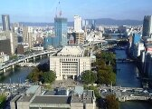
- Artist: Aska27
- URL: http://upload.wikimedia.org/wikipedia/commons/5/50/Osakacity001.JPG
- Accessed: Thu Sep 16 00:00:00 2011
- License: GNU Free Documentation License, Version 1.2 or any later version
Port_of_KOBE_-_by_Daiju_Azuma.jpg
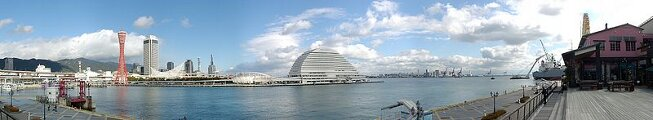
- Artist: Daiju Azuma
- URL: http://upload.wikimedia.org/wikipedia/commons/7/73/Port_of_KOBE_-_by_Daiju_Azuma.jpg
- Accessed: Tue Aug 16 22:25:27 2011
- License: Creative Commons Attribution-Share Alike 2.0 Generic
Shikasenbei02.jpg
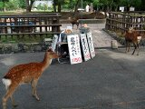
- Artist: Hirojin taja
- URL: http://upload.wikimedia.org/wikipedia/ja/3/3e/Shikasenbei02.jpg
- Accessed: Thu Sep 15 23:49:28 2011
- License: Public Domain
Takatsuki_Seibu01n4000.jpg
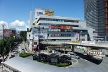
- Artist: 663highland
- URL: http://upload.wikimedia.org/wikipedia/commons/2/21/Takatsuki_Seibu01n4000.jpg
- Accessed: Tue Aug 16 22:24:53 2011
- License: GNU Free Documentation License, Version 1.2 or any later version
Takatsuki_Station03n2700.jpg
Takoyaki_by_yomi955.jpg
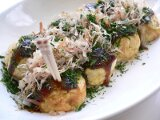
- Artist: heiwa4126
- URL: http://upload.wikimedia.org/wikipedia/commons/d/d8/Takoyaki_by_yomi955.jpg
- Accessed: Tue Aug 16 21:59:06 2011
- License: Creative Commons Attribution 2.0 Generic
Tenjinmatsuri.JPG
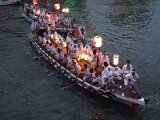
- Artist: Midori
- URL: http://upload.wikimedia.org/wikipedia/commons/3/35/Tenjinmatsuri.JPG
- Accessed: Thu Sep 15 23:51:21 2011
- License: GNU Free Documentation License, Version 1.2 or any later version
Todaiji02.JPG
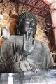
- Artist: Mass Ave 975
- URL: http://upload.wikimedia.org/wikipedia/commons/3/3c/Todaiji02.JPG
- Accessed: Thu Sep 15 23:52:04 2011
- License: GNU Free Documentation License, Version 1.2 or any later version
Togetsukyo0270.jpg
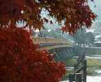
- Artist: user:Fg2
- URL: http://upload.wikimedia.org/wikipedia/commons/6/68/Togetsukyo0270.jpg
- Accessed: Tue Aug 16 21:55:21 2011
- License: Public Domain
Totsukawa_spa_town_2011.JPG
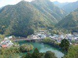
- Artist: Soica2001
- URL: ~
 =
= - Accessed: Thu Sep 15 23:53:48 2011
- License: Public Domain

{kind=link}
{kind=link}
{kind=link}
{kind=link}
{kind=link}
{kind=link}
{kind=link}
{kind=link}
{kind=link}
{kind=link}
{kind=link}
{kind=link}
{kind=link}
{kind=link}
{kind=link}
{kind=link}
{kind=link}
{kind=link}
{kind=link}
{kind=link}
{kind=link}
{kind=link}
{kind=link}
{kind=link}
{kind=link}
{kind=link}
{kind=link}
{kind=link}
{kind=link}
{kind=link}
{kind=link}
{kind=link}
{kind=link}
{kind=link}
{kind=link}
{kind=link}
{kind=link}
{kind=link}
{kind=link}
{kind=link}
{kind=link}
{kind=link}
{kind=link}
{kind=link}
{kind=link}
{kind=link}
{kind=link}
{kind=link}
{kind=link}
{kind=link}
{kind=link}
{kind=link}
Tsukemono_shop_by_ellievanhoutte_in_Nishiki-ichiba_Kyoto.jpg
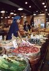
- Artist: ellievanhoutte
- URL: http://upload.wikimedia.org/wikipedia/commons/a/a1/Tsukemono_shop_by_ellievanhoutte_in_Nishiki-ichiba%2C_Kyoto.jpg
- Accessed: Tue Aug 16 21:46:20 2011
- License: Creative Commons Attribution 2.0 Generic
{kind=link}
Umeda-Dia-Bldg-01.jpg
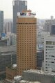
- Artist: J o
- URL: http://upload.wikimedia.org/wikipedia/commons/6/6d/Umeda-Dia-Bldg-01.jpg
- Accessed: Tue Aug 16 21:49:30 2011
- License: GNU Free Documentation License, Version 1.2 or any later version
{kind=link}
{kind=link}
{kind=link}